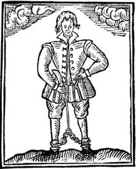

Tuesday, August the 4th, 2009
back to: title, date or indexes

I recently posted a quotation from Thomas Nashe (1567-c.1601), like Dobson an (almost) out of print pamphleteer. I think it will be a good idea for me to read his complete works, which include The Anatomy Of Absurdity, Nashe's Lenten Stuffe, An Almond For A Parrot, and Have With You To Saffron Walden—the latter title alone filling me with glee. There is thus a chance that Hooting Yard will get clogged with further Nashe quotations, but I am confident readers will enjoy them.